AFrenchKernel is a custom kernel for your device with multiple root solutions(KernelSU-Next, SukiSU-Ultra), small fixes and added features.
AFrenchKernel is currently available for the following devices:
 Samsung Galaxy A12s (SM-A127F)
Go to
Samsung Galaxy A12s (SM-A127F)
Go to


AFrenchKernel © 2025, by A French Dude | Licensed under the Apache License 2.0